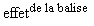

Contenu du cours
I. Introduction
À l'origine, HTML devait décrire la structure du texte sans imposer sa représentation physique qui devait rester le choix de l'utilisateur
et de son navigateur (voir le premier chapitre). Pour décrire la structure du texte, c'est à-dire la nature du contenu (nom, adresse...) on parle de formatage logique.
Pour décrire la représentation physique du texte (gras, italique, taille des caractères...) on parle de formatage physique.
Ce second type de formatage, on le rappelle, n'est pas à conseiller, sauf s'il faut assurer la compatibilité avec les plus
vieux navigateurs.
Ce cours va présenter ces deux types de formatage et les balises qui leur sont associées.
II. Formatage logique
1. Titre et sous-titre
Il s'agit ici des titres qui s'afficheront dans la page (et non dans la barre de titre comme la balise <title> précédemment) : ce sont les en-têtes de sections ou paragraphes.
Il existe six niveaux de titres d'importance décroissante : <h1>, <h2>, <h3>, <h4>, <h5>, <h6>.
Exemple et code source avec chaque balise TITRE :
|
Niveau de titre |
Effet en Times New Roman |
|---|---|
|
|
|
|
|
|
|
|
|
|
|
|
|
|
|
|
|
Table 1. Les niveaux de titre.
2. Paragraphes
a. La balise <p>
-
Fonction : Un paragraphe comme celui que vous lisez est délimité par les balises
<p>et</p>(voir le source de cette page). La balise<p>provoque un saut de ligne avant le paragraphe. Un paragraphe ne peut en contenir un autre (le navigateur les interprète comme des paragraphes successifs...). -
Attributs : Attributs de la balise
<p>Attribut
Valeur(s)
alignleft(par défaut)rightcenterjustifyTable 2. Attribut de la balise
<p>. Cet attribut n'est pas conforme auHTMLstrict.
b. Rupture de ligne: la balise <br>
-
Fonction : Force un retour en début de ligne suivante à l'intérieur d'un même paragraphe. La balise fermante est facultative.
-
Attributs : Attributs de la balise
<br>Attribut
Effet
Valeur(s)
clearrépartit le texte autour d'une image flottante ou d'un autre objet
allleftrightTable 3. Attribut de la balise
<br>. Cet attribut n'est pas conforme auHTMLstrict.
3. Les balises <div> et <span>
Ces balises jouent un rôle particulier. Elles permettent de découper l'information en unités logiques, et sont fortement utilisées
avec des feuilles de style. Par exemple, on peut scinder un document HTML avec deux balises <div> en deux parties, une présentant... une table des matières, et l'autre présentant un contenu de cours (cf. le code source de cette page !). La balise span permet quant à elle une structuration interne à un paragraphe. Par exemple, on peut indiquer un changement momentané de langage
utilisé avec l'exemple suivant :
<p>Hamlet a dit <span lang="en">"To be or not to be"</span>.</p>
4. Autres balises
|
Balise |
Signification |
Effet |
|---|---|---|
|
|
emphasis |
|
|
|
fort |
|
|
|
citation brève |
|
|
|
définition |
|
|
|
extrait de programme |
|
|
|
sample : échantillon |
|
|
|
Keyboard(clavier) |
|
|
|
variable ou argument |
|
|
|
abréviation |
|
|
|
acronyme |
|
|
|
subscript/indice |
|
|
|
superscript/exposant |
 |
|
|
preformatted |
Table 4. Balises de formatage logique.
La touche "Entrée" (le "retour chariot" du temps des machines à écrire) est codée en ASCII par 13. Le navigateur ne le considère pas comme un retour à la ligne mais comme un simple séparateur comme un blanc. Sans demande
particulière, le navigateur ignore votre formatage initial.
<PRE> force le navigateur à respecter les retours à la ligne et les blancs consécutifs.
5. La balise <hr>
Elle est destinée à séparer différentes parties d'un document au moyen d'un trait horizontal de longueur et d'épaisseur variables,
et généralement pourvu d'un ombrage. Il s'agit d'un conteneur vide dont la balise fermante est facultative (et même jamais
utilisée en HTML).
Cette balise possède des attributs, mais leur emploi est déconseillé par le W3C :
|
attribut |
effet |
valeur(s) |
|---|---|---|
|
|
suppression de l'ombrage |
booléen, sa présence seule supprime l'ombrage |
|
|
alignement |
|
|
|
épaisseur du trait |
nombre en pixels |
|
|
largeur du trait |
en pixels ou en pourcentage de la fenêtre du navigateur (ajouter le symbole %) |
Table 5. Les attributs (obsolètes) de la balise <hr>.
Exercice 1. Formatage logique
Énoncé
Correction
III. Formatage physique
Toutes les balises de cette partie sont obsolètes dans le HTML 4.01 strict.
1. Mise en forme de la police
a. Police par défaut
Les navigateurs utilisent par défaut une police proportionnelle : Times Roman sur les Macintosh, et Times New Roman sur les PC. En tant qu'utilisateur (surfeur !), il vous est possible de modifier cette police par défaut. Cela rend la tâche des développeurs de site d'autant plus ardue...
b. La balise <font>
Cette balise est déconseillée, utiliser plutôt les feuilles de style.
Pour modifier une partie du texte, on écrira par exemple :
<font face="Verdana, Arial, Helvetica, sans-serif" size="5" color="red">mon exemple</font>
qui produira l'effet suivant :
-
L'attribut
face: sa valeur est une liste de polices séparées par des virgules, c'est la première de cette liste présente sur le navigateur qui sera utilisée. Il est recommandé de spécifier en dernier lieu une famille de polices dite "générique" (nous y reviendrons dans le cours sur leCSS). -
L'attribut
size: Il existe 7 tailles, la taille par défaut est 3. On peut spécifier une taille relative à l'aide d'un incrément signé, par exemplesize="+2",size="-1". -
L'attribut
color: A l'aide d'un nom de couleur ou d'un code RGB (voir paragraphe sur la couleur).
c. La balise <basefont>
Elle est à déconseiller. Elle définit la taille du texte du conteneur dans laquelle elle est citée (seul attribut size).
d. Autres balises
|
Balise |
Signification |
Effet |
|---|---|---|
|
|
gras |
|
|
|
italique |
|
|
|
télétype : police à pas fixe |
|
|
|
taille supérieure à la taille courante |
|
|
|
taille inférieure à la taille courante |
|
|
|
ou |
|
|
|
underline/soulignement |
Table 6. Balises de formatage physique.
La balise <center> permet de centrer son contenu. Il est recommandé d'utiliser plutôt l'attribut align="center" ou, mieux, une feuille de style.
<blockquote>, prévu pour des citations de plusieurs lignes, cette balise permet de produire un effet d'indentation sur les deux marges
latérales.
IV. Les entités de caractères
1. Rappel
Il existe plusieurs codifications des caractères : ASCII sous MS-DOS, ANSI sous Windows ; les Macintosh ont leur propre système et les grosses machines IBM se servent de l'EBCDIC.
2. Nécessité d'un codage supplémentaire: les diacritiques
Les diacritiques sont les caractères constitués d'une lettre modifiée par un signe particulier : accent, tréma, cédille comme é, ï, ç etc.
HTML utilise la codification ASCII qui ne comporte aucun caractère accentué. Il faut donc définir une convention de codage supplémentaire
pour faire apparaître ces caractères.
3. Présentation d'une entité de caractère
Une entité de caractère débute par "&", et finit par ";". Exemple le "é" est codé "é".
Voici une petite liste des principaux caractères accentués :
|
Caractère |
Entité |
Caractère |
Entité |
|---|---|---|---|
|
à |
|
â |
|
|
ä |
|
æ |
|
|
é |
|
è |
|
|
ê |
|
ë |
|
|
ù |
|
û |
|
|
ü |
|
ö |
|
|
ï |
|
î |
|
|
ç |
|
œ |
|
Table 7. Principales entités de caractères utilisées en français.
4. Les caractères réservés
Les caractères comme "<", ">" et "&" ont une signification spécifique : le inférieur désigne le début d'une balise, etc. Codés tels quels, le navigateur est
incapable de les faire apparaître. Il a donc fallu leur adjoindre une codification supplémentaire : "<" est codé <, ">" est codé >, "&" est codé &.
5. L'entité
Ce caractère permet d'interdire la césure entre deux mots, par exemple : "100 €" ou d'ajouter des blancs contigus.
V. Codage de la couleur
HTML propose deux façons de coder unecouleur :
1. Par son nom
Il existe une liste de couleurs reconnues par la plupart des navigateurs. Les seize couleurs simples sont données dans le tableau ci-dessous donné dans la section "Les seize couleurs simples". Il en existe d'autres aux noms plus poétiques comme :
Cependant, le rendu de ces couleurs dépend parfois fortement du navigateur et de la plateforme utilisée.
2. Par le triplet RGB
Toute couleur peut être décomposée en trois couleurs : rouge, vert, bleu (Red, Green, Blue d'où RGB) d'intensité convenable.
Cette intensité est exprimée en un nombre compris entre 0 et 255. Ce nombre est codé en hexadécimal : il est alors compris
entre 0 et FF.
Par exemple, #BA1B85 code une intensité de BA (186) pour le rouge, 1B (27) pour le vert, 85 (133) pour le bleu qui donne :
3. Les seize couleurs simples
Voici les seize couleurs de base :
Vous aurez noté la couleur noire !